Mon Parcours
Licence Pro Technologies Logicielles pour le Web et Terminaux Mobiles
A venir : 2026-2027Formation sur l'algorithme et les technologies web & mobile, mais aussi de la gestion de projet et un stage en entreprise.
Stage de 2ᵉ année
Janvier-Févier 2026Stage à Vitalis (RTP) préparation de l'arrivée & le départ des agents avec 3 projets C# .NET9 (On/OffBoarding) en coopération avec un autre stagiaire.
BTS SIO - 2ᵉ année
2025-2026Formation en développement informatique, développement d'API en C# et Front End en Angular avec Capacitor pour le Mobile.
Stage de 1ʳᵉ année
Mai-Juin 2025Stage au Département de la Seine et Marne, modification d'une application de logs d'erreurs afin d'ajouter une piste de résolution à cette dernière, développement d'un manuel sur l'accessibilité des applications
BTS SIO - 1ʳᵉ année
2024 - 2025Découverte des fondamentaux du réseaux et de la cybersécurité. Premiers projets informatiques en HTML, CSS, Javascript et PHP.
Licence Informatique
2023-2024Découverte du développement en Ocaml, de l'agencement du code...
Baccalauréat
2023Obtention du baccalauréat général spécialité Maths / Sciences de l'Ingénieur.
Projets
Présentation de mes différents projets réalisés au cours de ma formation et de mes expériences lors des stages.
📚 Cours
Cartes Memory
Cartes à retourner à des fins d'apprentissanges .
Magnets
Tableau kanban de planification de tâches.
Projet Pyrofètes
Gestion des différents acteurs de Pyrofètes.
Application mobile de discussion chiffrée
Discussion chiffrée entre membres et par groupes.
🏢 Stages
Application de logs d'erreurs
Modification d'une application de logs d'erreurs.
OnBoarding / OffBoarding
Préparation de l'arrivée et du départ des employés & prestataires.
Compétences
Au cours de ma formations et de mes différents stages, j'ai pu acquérir de nombreuses compétences :
Langages de programmation :
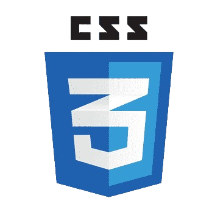
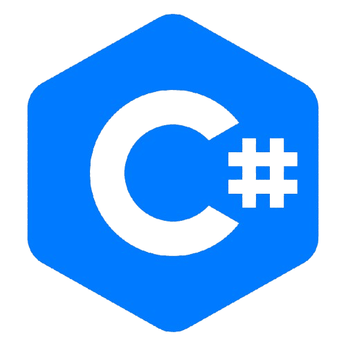
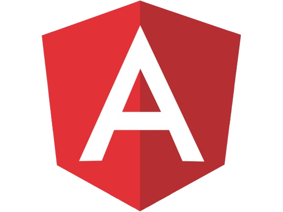
Outils & Logiciels :
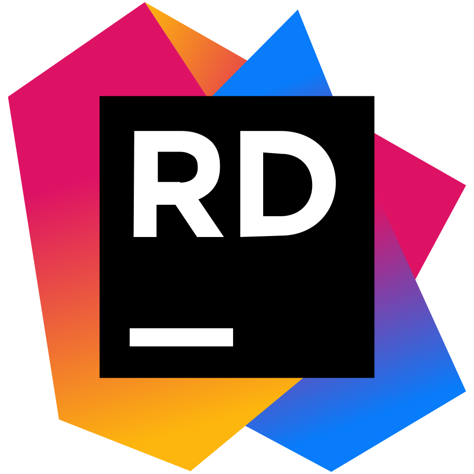
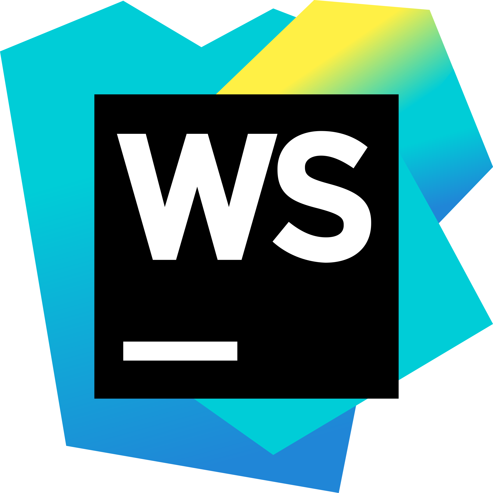
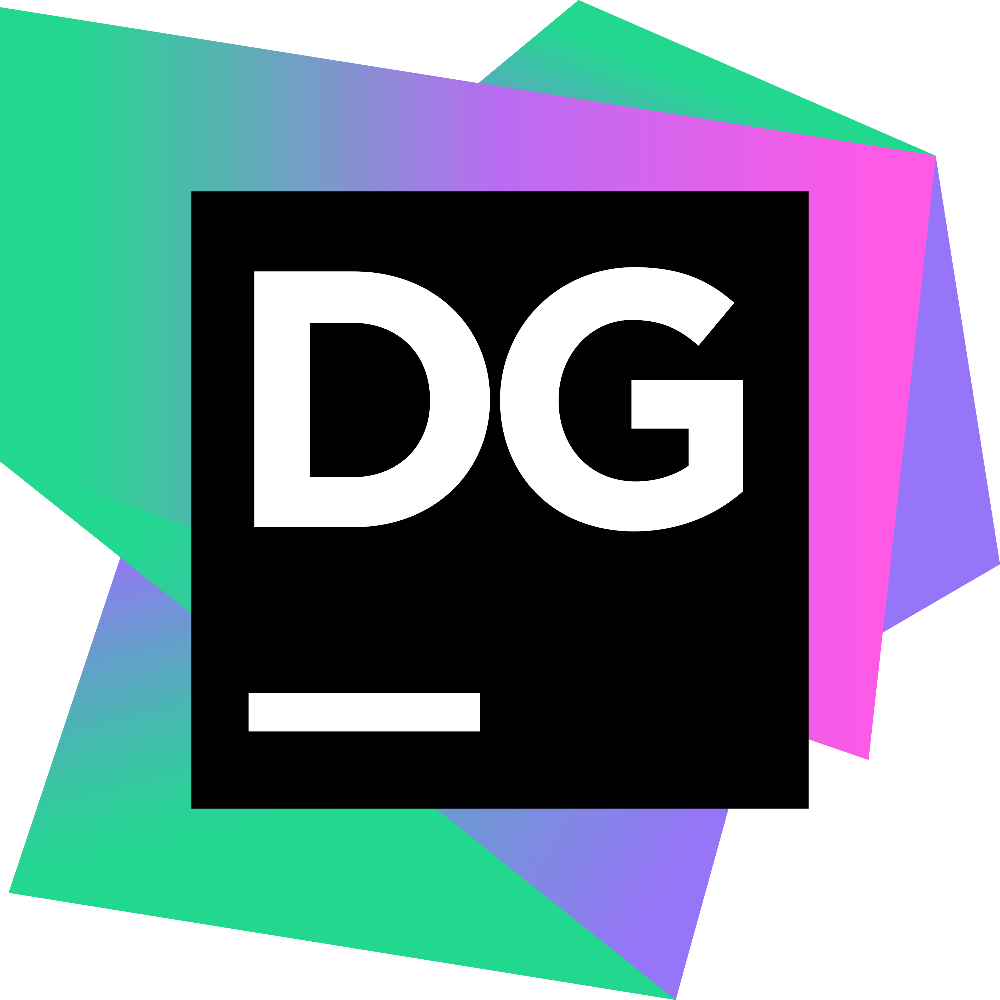
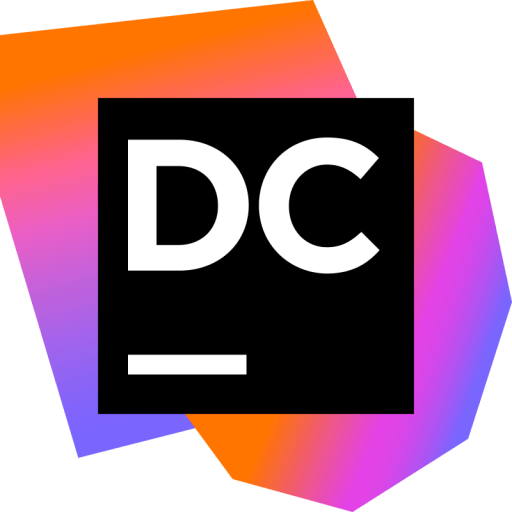

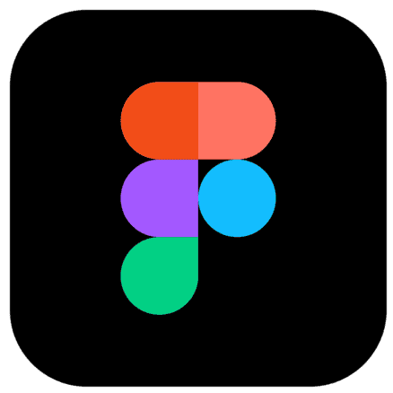
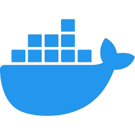
Certifications
Présentation de mes différentes certifications obtenues :
Certification ANSSI
Certification SecNom Academie.
Voir le diplôme
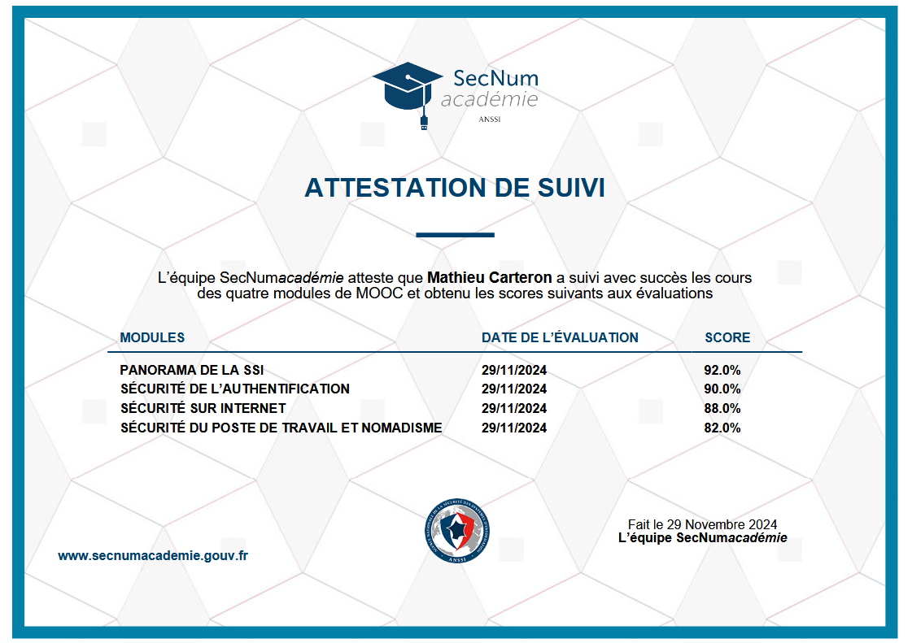
Certification CNIL
Atelier de sensibilation RGPD.
Voir le diplôme

Certification JavaScript
Certification OpenClassroom, réaliser une application mobile Android
(L'installation du dimplome est payante alors seul le screen est fourni).
Voir le diplôme
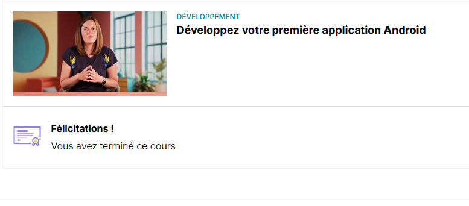
Certification Kamaé
Parcours de cyber sécurité et de respect du RGPD.
Voir le diplôme
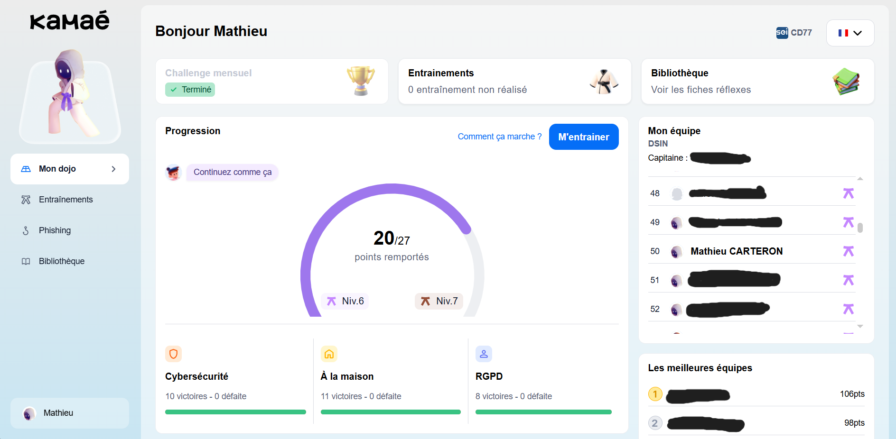
Fiches de procédures
Ici, vous trouverez diverses fiches de procédures liées à mes travaux en développement ou en réseau.
🌐 Réalisées en cours
VirtualBox
Guide d'utilisation de VirtualBox.
Machine virtuelle
Création d'une machine virtuelle sur VirtualBox
Installation de Debian
Installation de Debian sur une machine virtuelle.
DNS
Création et gestion d'un serveur DNS sur machine virtuelle.
GLPI
Création d'un serveur GLPI sur machine virtuelle.
Gestion de Veeam
Installation et utilisation de Veeam Backup & Replication.
Serveur web statique
Création d'un serveur web sur machine virtuelle.
Commandes Git
Différentes commandes utiles lors de la manipulation de Git.
Docker
Installation et création d'images et de conteneurs docker.
PCA
Diaporama de mise en place d'un PCA avec un downtime d'1h et de 48h.
PRA
Décortication d'une trame de PRA avec explication des tâches des différents acteurs du service.
Référencement Web
Explication du SEO et mise en place de quelques mesures sur un WordPress.
💻 Réalisées en stage
Veille Technologique
Ma veille technologique se divise en deux parties :
Accessibilité Web
Cette partie de ma veille est consacrée à l'accessibilité des applications mobiles, et en général à l'accessibilité web.
L'accessibilité web consiste à rendre accessible à la fois les applis et les sites web à tous types de handicap (que ce soit visuel ou moteur), ainsi le site ou l'appli devra être à la fois compréhensible et utilisable pour tous. Il faudra donc proposer une façon alternative de diffuser l'information (via une description par exemple), tous les éléments devraient être accessible uniquement avec le clavier... Pour les applications mobiles c'est pareil il faut pouvoir les rendre accessibles à tous, afin que tout le monde sans distinction puisse utiliser l'application !
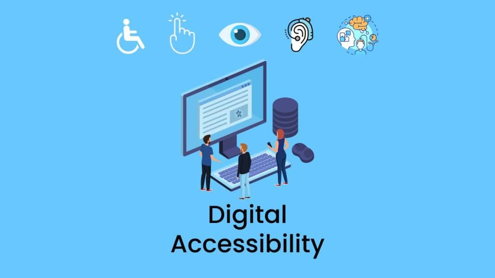
Référencement des sites web (SEO)
Cette partie de ma veille est consacrée au référencement des sites web.
Le référencement web, ou SEO (Search Engine Optimization), regroupe l’ensemble des techniques permettant d’améliorer la visibilité d’un site web sur les différents moteurs de recherche comme Google. Il repose sur plusieurs facteurs : la qualité du contenu, la structure du site, l’optimisation des mots-clés, la performance technique et les différents liens. Un bon SEO permet d’attirer un trafic organique durable sans recourir à de la publicité payante. Aujourd’hui, les moteurs de recherche privilégient les sites rapides, sécurisés (HTTPS) et adaptés aux appareils mobiles.